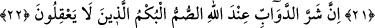
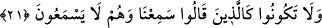

ALLAH’A VE RASÛLÜ’NE
İTAAT VE İCÂBET
20. Ey iman edenler! Allah’a ve Rasûlü’ne itaat edin, işittiğiniz halde O’ndan yüz
çevirmeyin.
21. İşitmedikleri halde “İşittik” diyenler gibi olmayın.
22. Şüphesiz Allah katında canlıların en kötüsü, düşünmeyen sağırlar ve
dilsizlerdir.
23. Allah onlarda bir hayır görseydi, elbette onlara işittirirdi. Fakat işittirseydi
bile yine onlar yüz çevirerek dönerlerdi.
24. Ey îman edenler! Size hayat verecek şeylere sizi çağırdığı zaman, Allah ve
Rasûlü’ne icâbet edin. Ve bilin ki, Allah kişi ile kalbi arasına girer ve siz mutlaka
O’nun huzurunda toplanacaksınız.
25. Öyle bir fitneden sakının ki, içinizden sadece zulmedenlere erişmekle kalmaz.
Bilin ki Allah’ın azabı şiddetlidir.
“Ey iman edenler! Allah’a ve Rasûlüne itaat edin, işittiğiniz halde” itaatin gerekli
olduğunu söyleyen Kur’an’ı ve ona muhalefetin yasak olduğunu bildiren öğütleri anlayıp
tasdik etmek niyetiyle dinlediğiniz halde “O’ndan” yani Rasûl’den “yüz çevirmeyin.”
buyurulmuş, O ikisinden, yani Allah ve Rasûlü’nden yüz çevirmeyin buyurulmamıştır.
Çünkü, Allah’a itâat da ancak Rasûlüne itaatla mümkün olur.